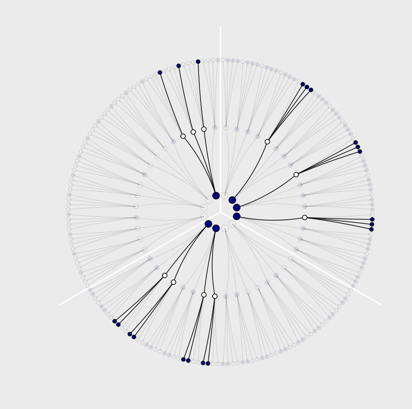
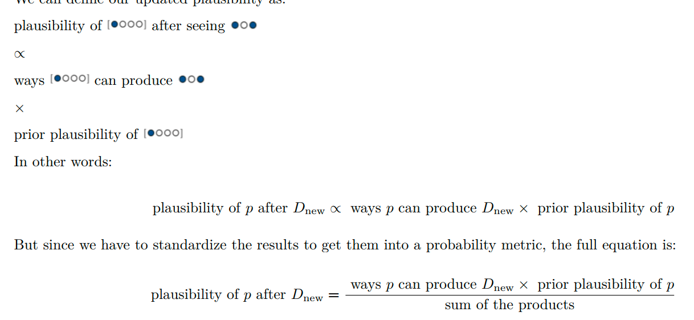
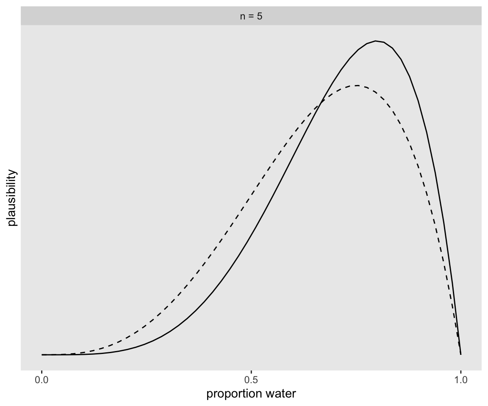
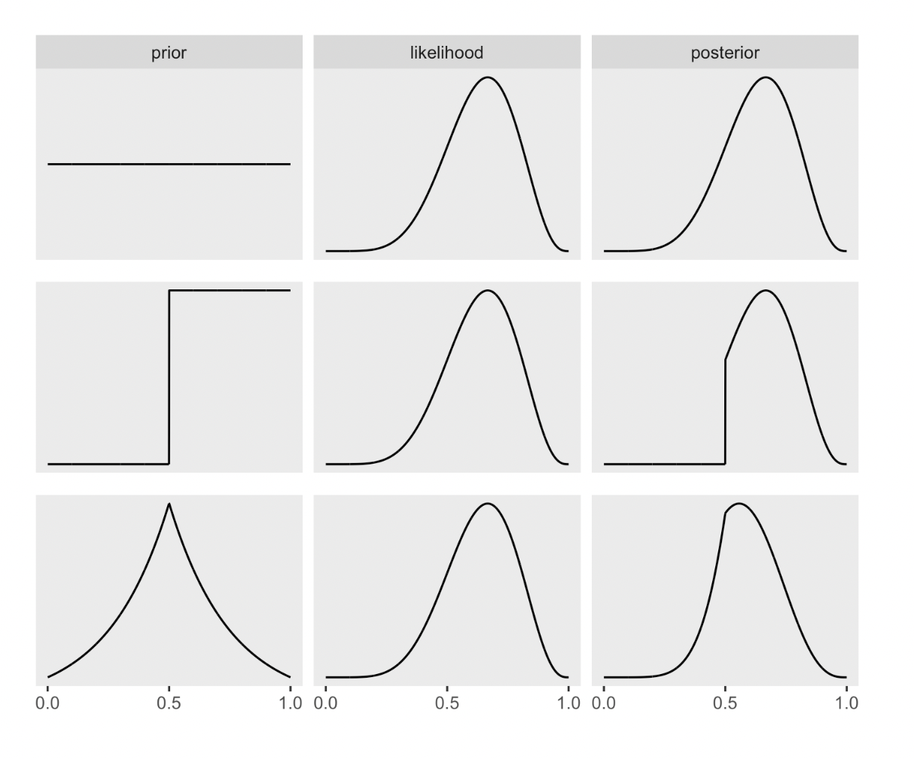
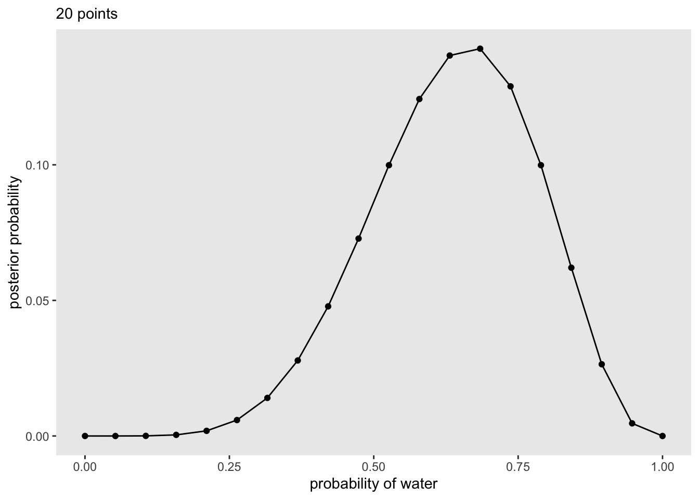
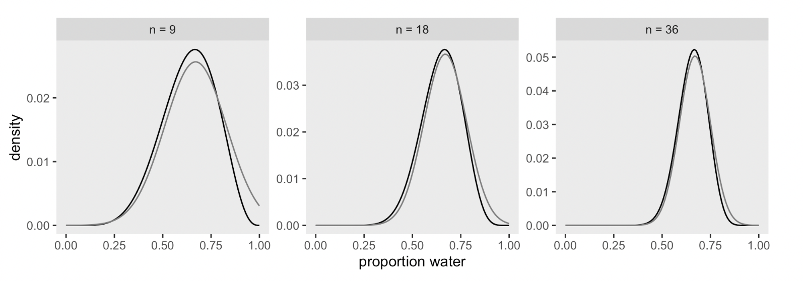
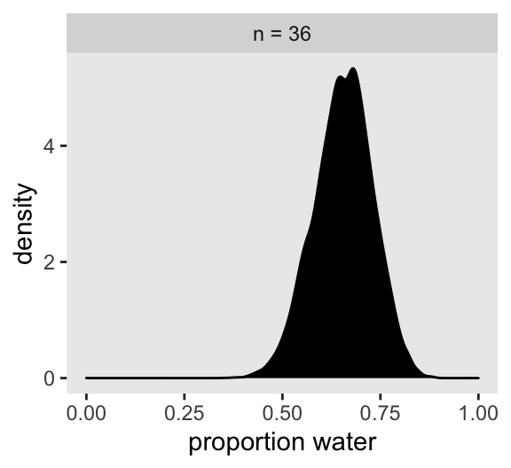

21 Ch 2. Small/Large Worlds
21.1 2.1. Garden of Forking data
The small world is the self-contained logical world of the model.
The way that Bayesian models learn from evidence is arguably optimal in the small world. When their assumptions approximate reality, they also perform well in the large world. But large world performance has to be demonstrated rather than logically deduced.
This demonstrates that there are three (out of 64) ways for a bag containing [a combo of blue and white marbles] to produce the data. The inferential power comes from comparing this count to the numbers of ways each of the other conjectures of the bag’s contents could produce the same data.
…. can be computed just by multiplying the new count by the old count. This updating approach amounts to nothing more than asserting that (1) when we have previous information suggesting there are \(W_prior\) ways for a conjecture to produce a previous observation \(D_{prior}\) and (2) we acquire new observations \(D_{new}\) that the same conjecture can produce in \(W_{new}\) ways, then (3) the number of ways the conjecture can account for both \(D_{prior}\) as well as \(D_{new}\) is just the product \(W_{prior} \times W_{new}\).
This is sometimes known as the principle of indifference: When there is no reason to say that one conjecture is more plausible than another, weigh all of the conjectures equally. This book does not use nor endorse “ignorance” priors. As we’ll see in later chapters, the structure of the model and the scientific context always provide information that allows us to do better than ignorance.

Kurz laboriously calculates the values and constructs it using tibbles and ggplot. Not sure what the latter teaches us.
2.1.2 Using prior information
Some functions and data for tabulating ‘how likely is the data we drew’ (marbles we saw) given different bag compositions. We ‘count the (equally likely) ways’ below. This is the product of ‘ways of drawing the first (blue) marble’, the second ‘white’, and the third ‘blue’ marble.
Ways of producing data
# if we make two custom functions, here, it will simplify the code within `mutate()`, below
n_blue <- function(x) {
rowSums(x == "b")
}
n_white <- function(x) {
rowSums(x == "w")
}
t <-
# for the first four columns, `p_` indexes position
tibble(p_1 = rep(c("w", "b"), times = c(1, 4)),
p_2 = rep(c("w", "b"), times = c(2, 3)),
p_3 = rep(c("w", "b"), times = c(3, 2)),
p_4 = rep(c("w", "b"), times = c(4, 1))) %>%
mutate(`draw 1: blue` = n_blue(.),
`draw 2: white` = n_white(.),
`draw 3: blue` = n_blue(.)) %>%
mutate(`ways to produce` = `draw 1: blue` * `draw 2: white` * `draw 3: blue`)
t %>% knitr::kable()| p_1 | p_2 | p_3 | p_4 | draw 1: blue | draw 2: white | draw 3: blue | ways to produce |
|---|---|---|---|---|---|---|---|
| w | w | w | w | 0 | 4 | 0 | 0 |
| b | w | w | w | 1 | 3 | 1 | 3 |
| b | b | w | w | 2 | 2 | 2 | 8 |
| b | b | b | w | 3 | 1 | 3 | 9 |
| b | b | b | b | 4 | 0 | 4 | 0 |
Next we get more data: another blue marble (already shown above), and there is a ‘shortcut’:
You could start all over again, making a garden with four layers to trace out the paths compatible with the data sequence. Or you could take the previous counts—the prior counts—over conjectures (0, 3, 8, 9, 0) and just update them in light of the new observation. It turns out that these two methods are mathematically identical, as long as the new observation is logically independent of the previous observations
Ways; add a marble
t <-
t %>%
rename(`previous counts` = `ways to produce`,
`ways to produce` = `draw 1: blue`) %>%
select(p_1:p_4, `ways to produce`, `previous counts`) %>%
mutate(`new count` = `ways to produce` * `previous counts`)We can also incorporate ‘different data’ – e,g., certain amounts of ‘prior counts of each bag in the factory’ … we simply multiply these in. ‘You first draw a factory bag with a particular count … which can occur XXX ways, and then you draw a blue marble from that bag, which can occur YYY ways, etc’.
add factory counts
| p_1 | p_2 | p_3 | p_4 | prior count | factory count | new count |
|---|---|---|---|---|---|---|
| w | w | w | w | 0 | 0 | 0 |
| b | w | w | w | 3 | 3 | 9 |
| b | b | w | w | 16 | 2 | 32 |
| b | b | b | w | 27 | 1 | 27 |
| b | b | b | b | 0 | 0 | 0 |
2.1.3. From counts to probability

Putting this all together to compute the plausibilities
Is this with a flat prior… starting with an equal probability of each bag type, or is ‘plausibility’ something different than the posterior?
plausibilities
# A tibble: 5 × 7
p_1 p_2 p_3 p_4 p `ways to produce data` plausibility
<chr> <chr> <chr> <chr> <dbl> <dbl> <dbl>
1 w w w w 0 0 0
2 b w w w 0.25 3 0.15
3 b b w w 0.5 8 0.4
4 b b b w 0.75 9 0.45
5 b b b b 1 0 0 21.2 2.2. Building a model
Designing a simple Bayesian model benefits from a design loop with three steps. (1) Data story: Motivate the model by narrating how the data might arise. (2) Update: Educate your model by feeding it the data. (3) Evaluate: All statistical models require supervision, leading to model revision
How can we ‘revise the model’ without overfitting or otherwise cheating in some way that overstates the confidence we should have in our results?
The maximum height of the curve increases with each sample, meaning that fewer values of \(p\) amass more plausibility as the amount of evidence increases
Power of Bayesian inference in small-sample contexts
Why? In non-Bayesian statistical inference, procedures are often justified by the method’s behavior at very large sample sizes, so-called asymptotic behavior. As a result, performance at small samples sizes is questionable. In contrast, Bayesian estimates are valid for any sample size. This does not mean that more data isn’t helpful—it certainly is. Rather, the estimates have a clear and valid interpretation, no matter the sample size. But the price for this power is dependency upon the initial plausibilities, the prior. If the prior is a bad one, then the resulting inference will be misleading.
DR note: There are some frequentist/non-Bayesian procedures and tests that don’t rely on large sample approximations; e.g., Fisher’s exact test
2.2.1 - the ‘globe tossing’ data story
2.2.2 Bayesian updating
Start with a particular sequence of data, accumulate trials and successes
Code
# A tibble: 9 × 3
toss n_trials n_success
<chr> <int> <int>
1 w 1 1
2 l 2 1
3 w 3 2
4 w 4 3
5 w 5 4
6 l 6 4
7 w 7 5
8 l 8 5
9 w 9 6Next, we compute and plot the plausibility of every ‘true share of water p’ after observing the draws from the globe-tossing. We update this after each toss.
OK I need to construct some data on this globe tossing first; I skipped this earlier
Next we build the tibble plausibility/updating tibble.
Going through the coding steps for my own benefit… First we expand the tibble to consider each of 50 possible p_water values after each trial (toss).
Code
sequence_length <- 50
(
plaus_globe_updates <-
d %>%
expand(nesting(n_trials, toss, n_success),
p_water = seq(from = 0, to = 1, length.out = sequence_length))
)# A tibble: 450 × 4
n_trials toss n_success p_water
<int> <chr> <int> <dbl>
1 1 w 1 0
2 1 w 1 0.0204
3 1 w 1 0.0408
4 1 w 1 0.0612
5 1 w 1 0.0816
6 1 w 1 0.102
7 1 w 1 0.122
8 1 w 1 0.143
9 1 w 1 0.163
10 1 w 1 0.184
# … with 440 more rowsNext we create the ‘lagged’ columns (for ease of plotting the updating):
updating globe tossing - lags
plaus_globe_updates %<>%
group_by(p_water) %>%
# you can learn more about lagging here: https://www.rdocumentation.org/packages/stats/versions/3.5.1/topics/lag or here: https://dplyr.tidyverse.org/reference/lead-lag.html
mutate(lagged_n_trials = lag(n_trials, k = 1),
lagged_n_success = lag(n_success, k = 1)) %>%
ungroup()
plaus_globe_updates[95:105,]# A tibble: 11 × 6
n_trials toss n_success p_water lagged_n_trials lagged_n_success
<int> <chr> <int> <dbl> <int> <int>
1 2 l 1 0.898 1 1
2 2 l 1 0.918 1 1
3 2 l 1 0.939 1 1
4 2 l 1 0.959 1 1
5 2 l 1 0.980 1 1
6 2 l 1 1 1 1
7 3 w 2 0 2 1
8 3 w 2 0.0204 2 1
9 3 w 2 0.0408 2 1
10 3 w 2 0.0612 2 1
11 3 w 2 0.0816 2 1Next we start with a flat prior and, for each ‘trial’ …
- compute the likelihood of the data (sucesses and trials) given each probability of water, according to the binomial probability function.
- both with the previous ‘lagged’ data and adding the new data point
- normalize each of these by dividing by the likelihood of the data that has arisen,
- this yields the ‘plausbility’ of each probability of water . (I.e., the posterior?)
Code
plaus_globe_updates %<>%
mutate(prior = ifelse(n_trials == 1, 1, #DR: I adjusted this to =1 to avoid confusing it with a certainty that p=.5
dbinom(
x= lagged_n_success,
size = lagged_n_trials,
prob = p_water)),
likelihood = dbinom(x = n_success,
size = n_trials,
prob = p_water),
strip = str_c("n = ", n_trials)) %>%
# the next three lines allow us to normalize the prior and the likelihood,
# putting them both in a probability metric
group_by(n_trials) %>%
mutate(prior = prior / sum(prior),
likelihood = likelihood / sum(likelihood))Plotting this:
Code
plaus_globe_updates %>%
# filter(n_trials==5) %>%
# plot!
ggplot(aes(x = p_water)) +
geom_line(aes(y = prior), linetype = 2) +
geom_line(aes(y = likelihood)) +
scale_x_continuous("proportion water", breaks = c(0, .5, 1)) +
scale_y_continuous("plausibility", breaks = NULL) +
theme(panel.grid = element_blank()) +
facet_wrap(~strip, scales = "free_y")
If it wasn’t clear in the code, the dashed curves are normalized prior densities. The solid ones are normalized likelihoods. If you don’t normalize (i.e., divide the density by the sum of the density), their respective heights don’t match up with those in the text. Furthermore, it’s the normalization that makes them directly comparable.
To learn more about
dplyr::group_by()and its oppositedplyr::ungroup(), check out R4DS, Chapter 5. To learn abouttidyr::expand(), go here.
21.3 2.3. Components of the model
- a likelihood function: “the number of ways each conjecture could produce an observation”
- one or more parameters: “the accumulated number of ways each conjecture could produce the entire data”
- a prior: “the initial plausibility of each conjectured cause of the data”
dbinom, pbinom, rbinom, etc
“d” in
dbinomstands for density. Functions named in this way almost always have corresponding partners that begin with “r” for random samples and that begin with “-p” for cumulative probabilities
The distributions we assign to the observed variables typically have their own variables.
A great deal of ink has been spilled focusing on how Bayesian and non-Bayesian data analyses differ. Focusing on differences is useful, but sometimes it distracts us from fundamental similarities. Notably, the most influential assumptions in both Bayesian and many non-Bayesian models are the distributions assigned to data, the likelihood functions. The likelihoods influence inference for every piece of data, and as sample size increases, the likelihood matters more and more. This helps to explain why Bayesian and non-Bayesian inferences are often so similar. If we had to explain Bayesian inference using only one aspect of it, we should describe likelihood, not priors.
(DR: move this to our discussion of compring statistical frameworks?)
What prior?
So where do priors come from? They are both engineering assumptions, chosen to help the machine learn, and scientific assumptions, chosen to reflect what we know about a phenomenon. The flat prior in Figure 2.5 is very common, but it is hardly ever the best prior.
There is a school of Bayesian inference that emphasizes choosing priors based upon the personal beliefs of the analyst. While this subjective Bayesian approach thrives in some statistics and philosophy and economics programs, it is rare in the sciences.
If your goal is to lie with statistics, you’d be a fool to do it with priors, because such a lie would be easily uncovered. Better to use the more opaque machinery of the likelihood. Or better yet-don’t actually take this advice!—massage the data, drop some “outliers,” and otherwise engage in motivated data transformation
because non-Bayesian procedures need to make choices that Bayesian ones do not, such as choice of estimator or likelihood penalty.
DR: I skip the construction of the ‘multiply prior by likelihood to get posterior’ graphs for now …
Below: flat, stepped, Laplace priors

21.4 2.4 ‘Making the model go’
DR: I think this section is particularly important. It’s our first pass on ‘how to actually do this stuff’. Reading group: I suggest we put some focus on it, maybe in the next session.
2.4.1 Bayes theorem
In word form:
Posterior (probability of any given value of \(p\)) =
(Probability of the data [given p] \(\times\) [Prior probability of p]) divided by the ‘Average probability of the data’
I.e., (in my own words) ‘how likely is this data and the particular parameter p’ divided by ‘the probability of this data overall’ (given any p, with the probability of each p following the prior)
‘average probability of the data’
Averaged over what? Averaged over the prior. It’s job is just to standardize the posterior, to ensure it sums (integrates) to one. In mathematical form: Pr(W, L) = E
Probability of one Water followed by one Land:
\[Pr(W, L|p)\] \[=E\Big( Pr(W, L|p) Big)\]
\[= \int Pr(W,L|p) Pr(p)dp \]
The key lesson is that the posterior is proportional to the product of the prior and the probability of the data [given the prior]. Why? Because for each specific value of p, the number of paths through the garden of forking data is the product of the prior number of paths and the new number of paths. A flat prior constructs a posterior that is simply proportional to the likelihood
Dissing the ‘HIV test false positive’ thing
Inference under any probability concept will eventually make use of Bayes’ theorem. Common introductory examples of ‘Bayesian’ analysis using HIV and DNA testing are not uniquely Bayesian
Numerical techniques for computing posterior distributions: (1) Grid approximation (2) Quadratic approximation (3) Markov chain Monte Carlo (MCMC)
Grid approximation: Basically mechanical Bayesian updating of the probability of a parameter value being in a range, dividing up the space of possible parameters into different ranges. (And then smoothing?)
… achieve an excellent approximation of the continuous posterior distribution by considering only a finite grid of parameter values
in most of your real modeling, grid approximation isn’t practical. The reason is that it scales very poorly, as the number of parameters increases
21.4.1 Grid approximation
The code below makes a data frame with
- 20 Probabilities between 0 and 1
- A ‘flat’ density (=1 everywhere) for these
- The likelihood of “6 waters in 9” (the data) given each of the 20 probabilities (binomial distribution)
- This likelihood \(\times\) the prior for each
p_water.
- Rem: this is likelihood of a particular
p_waterand the observed data given thatp_water - Given the flat prior it is simply the latter
- Standardizing this by dividing by the probability of the data observed
Grid, computing posteriors
(
d <-
tibble(p_grid = seq(from = 0, to = 1, length.out = 20), # define grid
prior = 1) %>% # define prior
mutate(likelihood = dbinom(6, size = 9, prob = p_grid)) %>% # compute likelihood at each value in grid
mutate(unstd_posterior = likelihood * prior) %>% # compute product of likelihood and prior
mutate(posterior = unstd_posterior / sum(unstd_posterior)) # standardize the posterior, so it sums to 1
)# A tibble: 20 × 5
p_grid prior likelihood unstd_posterior posterior
<dbl> <dbl> <dbl> <dbl> <dbl>
1 0 1 0 0 0
2 0.0526 1 0.00000152 0.00000152 0.000000799
3 0.105 1 0.0000819 0.0000819 0.0000431
4 0.158 1 0.000777 0.000777 0.000409
5 0.211 1 0.00360 0.00360 0.00189
6 0.263 1 0.0112 0.0112 0.00587
7 0.316 1 0.0267 0.0267 0.0140
8 0.368 1 0.0529 0.0529 0.0279
9 0.421 1 0.0908 0.0908 0.0478
10 0.474 1 0.138 0.138 0.0728
11 0.526 1 0.190 0.190 0.0999
12 0.579 1 0.236 0.236 0.124
13 0.632 1 0.267 0.267 0.140
14 0.684 1 0.271 0.271 0.143
15 0.737 1 0.245 0.245 0.129
16 0.789 1 0.190 0.190 0.0999
17 0.842 1 0.118 0.118 0.0621
18 0.895 1 0.0503 0.0503 0.0265
19 0.947 1 0.00885 0.00885 0.00466
20 1 1 0 0 0 We then plot the posterior probabilities of each p_water:
Code
(
p1 <-
d %>%
ggplot(aes(x = p_grid, y = posterior)) +
geom_point() +
geom_line() +
labs(subtitle = "20 points",
x = "probability of water",
y = "posterior probability") +
theme(panel.grid = element_blank())
)
Quadratic approximation (summary)
Under quite general conditions, the region near the peak of the posterior distribution will be nearly Gaussian-or “normal”—in shape. This means the posterior distribution can be usefully approximated by a Gaussian distribution. A Gaussian distribution is convenient, because it can be completely described by only two numbers: the location of its center (mean) and its spread (variance)
logarithm of a Gaussian distribution forms a parabola. And a parabola is a quadratic function
For many of the most common procedures in applied statistics-linear regression, for example—the approximation works very well
Stepping through this
- Find the posterior mode
Some optimization algorithm, a procedure that virtually “climbs” the posterior distribution
- estimate the curvature near the peak. This curvature is sufficient to compute a quadratic approximation of the entire posterior distribution. In some cases, these calculations can be done analytically, but…
But how does it do this estimate of the curvature? Does it come out of many simulations, or the optimizing hill climbing thing, or??
Hessian is a square matrix of second derivatives. It is used for many purposes in mathematics, but in the quadratic approximation it is second derivatives of the log of posterior probability with respect to the parameters. It turns out that these derivatives are sufficient to describe a Gaussian distribution, because the logarithm of a Gaussian distribution is just a parabola. Parabolas have no derivatives beyond the second
Applying the quadratic approximation to the globe tossing data with rethinking::map().
rethinking::map() coding notes
Here the ‘love letter’ uses McElreath’s rethinking package instead of brms … I guess it’s because quadratic approximation is more for learning than for real use?
quap and map:
- “Find mode of posterior distribution for arbitrary fixed effect models”
- “and then produce an approximation of the full posterior using the quadratic curvature at the mode.”
(This has nothing to do with purrr::map iteration package thing.)
quap with rethinking::map
mean sd 5.5% 94.5%
p 0.6666664 0.1571338 0.4155362 0.9177967alist is a way of specifying a list (iirc) that preserves it as a ‘name of the math we want to compute on’ rather than it actually expanding/evaluating it.
precis is just a handy tool for seeing data .
The output globe_qa contains a lot of content (try str(globe_qa)).
Above, the precis gives us some summary statistics on the estimated posterior.
DR: I will skip the code that produces the figure below showing how quap updates with more data, for now.

Markov chain Monte Carlo (incomplete explanation)
DR:MCMC is not fully explained here. Somehow you ’sample from the posterior (over the parameter values)” and do some magic. Maybe weighting these by how consistent they are with the prior and the data?
Grid approximation routinely fails here, because it just takes too long—the Sun will go dark before your computer finishes the grid. Special forms of quadratic approximation might work, if everything is just right. But commonly, something is not just right. Furthermore, multilevel models do not always allow us to write down a single, unified function for the posterior distribution. This means that the function to maximize (when finding the MAP) is not known, but must be computed in pieces
is fair to say that MCMC is largely responsible for the insurgence of Bayesian data analysis that began in the 1990s.
highly non-obvious strategy. Instead of attempting to compute or approximate the posterior distribution directly, MCMC techniques merely draw samples from the posterior. You end up with a collection of parameter values, and the frequencies of these values correspond to the posterior plausibilities. You can then build a picture of the posterior from the histogram of these samples. We nearly always work directly with these samples, rather than first constructing some mathematical estimate from them
, a working Markov chain for the globe tossing model does not require much code
He starts with \(p=.5\), considers the likelihood of the data under this probability, adjusts p.
I don’t see how this MCMC works; anyone have more insight? And where does the prior come in here?)
Kurz: Markov chain Monte Carlo
Bringing in brms
Here re-fit the last model from above, the one for which \(w = 24\) and \(n = 36\).
DR: Not sure why we save a file here
The model output from brms looks like so.
Code
print(b2.1) Family: binomial
Links: mu = identity
Formula: w | trials(36) ~ 1
Data: list(w = 24) (Number of observations: 1)
Draws: 4 chains, each with iter = 4000; warmup = 1000; thin = 1;
total post-warmup draws = 12000
Population-Level Effects:
Estimate Est.Error l-95% CI u-95% CI Rhat Bulk_ESS Tail_ESS
Intercept 0.66 0.07 0.50 0.79 1.00 3965 4326
Draws were sampled using sampling(NUTS). For each parameter, Bulk_ESS
and Tail_ESS are effective sample size measures, and Rhat is the potential
scale reduction factor on split chains (at convergence, Rhat = 1).There’s a lot going on in that output, which we’ll start to clarify in Chapter 4. For now, focus on the ‘Intercept’ line. As we’ll also learn in Chapter 4, the intercept of a regression model with no predictors is the same as its mean. In the special case of a model using the binomial likelihood, the mean is the probability of a 1 in a given trial, \(\theta\).
Let’s plot the results of our model and compare them with those from rethinking::map(), above.
Code
posterior_samples(b2.1) %>%
mutate(n = "n = 36") %>%
ggplot(aes(x = b_Intercept)) +
geom_density(fill = "black") +
scale_x_continuous("proportion water", limits = c(0, 1)) +
theme(panel.grid = element_blank()) +
facet_wrap(~n)
If you’re still confused. Cool. This is just a preview. We’ll start walking through fitting models in brms in [Chapter 4][A Gaussian model of height] and we’ll learn a lot about regression with the binomial likelihood in [Chapter 10][Counting and Classification].
Practice questions
The target of inference in Bayesian inference is a posterior probability distribution. Posterior probabilities state the relative numbers of ways each conjectured cause of the data could have produced the data
DR note: although the plot looks smooth, I think this is only because we chose a small interval of probability … 50 different probabilities. When I reduce it to 5 probabilities this gets choppy↩︎